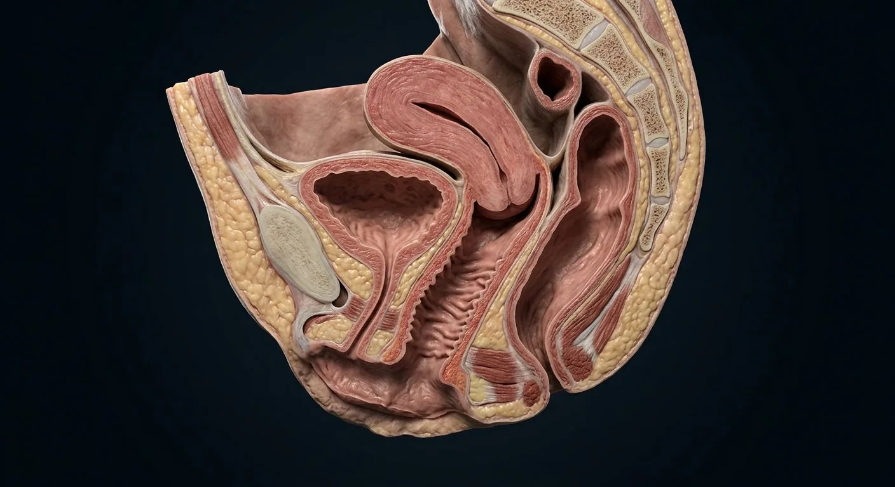

How this part of the body works
External structures are detailed below. The default realistic render is a regional sagittal context view; surface landmarks not visible in this plane are explained in the part records and a dedicated schematic.
Read the anatomy, part by part
These 16 structures correspond to the chapter’s regional illustration or schematic. Each entry separates location, function and a clinical point.
Mons pubis
Fatty pad over pubic symphysis.
What it doesCushions pubic bone.
Clinical connectionNormal hair pattern and contour vary widely.
Labia majora
Outer skin folds containing fat and connective tissue.
What it doesProtect the vestibule and inner folds.
Clinical connectionVulvar lymph largely drains to superficial inguinal nodes.
Labia minora
Inner hairless folds, highly variable in size and pigmentation.
What it doesBorder the vestibule and contribute to clitoral hood.
Clinical connectionNormal asymmetry is common and not pathological.
Clitoral glans & hood
Glans at the anterior meeting of labia minora, under prepuce.
What it doesHighly innervated erectile tissue.
Clinical connectionClitoral neurovascular supply should be respected in vulvar surgery.
Clitoral body & crura
Paired erectile corpora extend along pubic rami.
What it doesErectile engorgement.
Clinical connectionMost of clitoral structure is internal rather than visible externally.
Vestibular bulbs
Paired erectile tissues along lateral vaginal opening.
What it doesEngorge with arousal, beside bulbospongiosus muscle.
Clinical connectionCan contribute to hematoma after perineal trauma.
Vulvar vestibule
Space between labia minora containing urethral and vaginal openings.
What it doesShared surface region for urinary and genital outlets.
Clinical connectionDistinguish urethral meatus from vaginal introitus on examination.
External urethral meatus
Urinary opening anterior to vaginal introitus.
What it doesUrine exits here, not through the vagina.
Clinical connectionAn important catheterization landmark.
Vaginal introitus
Vaginal opening posterior to urethral meatus.
What it doesEntrance to the vaginal canal.
Clinical connectionHymenal tissue is variable and cannot establish sexual history.
Hymenal rim
Variable mucosal fold around part of vaginal opening.
What it doesEmbryologic remnant with a wide normal range.
Clinical connectionIts appearance is not a reliable marker of sexual activity.
Greater vestibular (Bartholin) glands
Paired glands posterolateral to vaginal opening; ducts empty in vestibule.
What it doesSecrete mucus for lubrication.
Clinical connectionDuct obstruction may cause a cyst or abscess.
Paraurethral (Skene) glands
Small glands beside the distal urethra.
What it doesContribute secretions near the urethral opening.
Clinical connectionCan rarely become inflamed or form a cyst.
Posterior fourchette
Where labia minora join behind the introitus.
What it doesLandmark at posterior vestibule.
Clinical connectionPerineal tears may involve this region.
Perineal body
Fibromuscular node between vagina and anus.
What it doesAttachment for bulbospongiosus, transverse perineal and anal sphincter fibers.
Clinical connectionObstetric tears may compromise perineal support.
Hart line / vestibular boundary
Transition between inner labial and vestibular epithelium.
What it doesDefines epithelial regions clinically.
Clinical connectionUseful descriptor when localizing lesions.
Vulvar lymphatic drainage
Most vulvar tissues drain to superficial inguinal nodes; clitoral routes can reach deeper nodes.
What it doesCarries immune cells and tissue fluid.
Clinical connectionSide and depth of drainage matter in cancer staging.
Deeper structures and tissue layers
These 4 additional entries give anatomical context. They are deliberately not assigned a photographic pin on the regional image.
Related deep chapters: Clitoral erectile complex.
Clitoral glans
External distal part beneath or exposed by the hood; dense sensory innervation and distinct histology from cavernous bodies.
What it doesConveys fine sensation.
Clinical connectionDo not describe the glans as a paired cavernous body.
Clitoral prepuce
Fold of skin derived from the anterior labia minora covering part of the glans.
What it doesProtects and permits mobility of glans.
Clinical connectionIts form and degree of coverage vary normally.
Clitoral body
Midline body formed by apposition of the paired corpora cavernosa, deep to the external glans.
What it doesEngorges via cavernous vascular spaces.
Clinical connectionThe externally visible part understates total size.
Right corpus cavernosum
One of the paired erectile cylinders of the clitoral body, enclosed by tunica albuginea.
What it doesFills with blood during arousal.
Clinical connectionSeparate it anatomically from the vestibular bulb.
Five questions about Vulva — external genital anatomy
Short answers grounded in the structures described above. Use the illustrated guide for anatomical context.
What structures are included in the vulva?
The vulva includes the mons pubis, labia majora and minora, clitoral structures and vestibule with urethral and vaginal openings.
Are the vulva and vagina the same thing?
No. The vulva names the external genital region; the vagina is the internal muscular canal extending toward the cervix.
What are the labia majora?
Outer skin folds containing fat and connective tissue. Function: Protect the vestibule and inner folds.
Where are the labia minora located?
Inner hairless folds, highly variable in size and pigmentation. Function: Border the vestibule and contribute to clitoral hood.
What is the function of the greater vestibular (Bartholin) glands?
Function: Secrete mucus for lubrication. Paired glands posterolateral to vaginal opening; ducts empty in vestibule.
Related anatomy guides
Follow these connected structures and body systems in the illustrated atlas.
 Clitoral erectile complexA three-dimensional neurovascular and erectile complex: paired crura, body, glans and closely related vestibular bulbs.↗
Clitoral erectile complexA three-dimensional neurovascular and erectile complex: paired crura, body, glans and closely related vestibular bulbs.↗ Vagina — walls & fornicesA layered fibromuscular canal: rugae, muscularis, fornices, vestibular opening, adjacent urethra and rectum.↗
Vagina — walls & fornicesA layered fibromuscular canal: rugae, muscularis, fornices, vestibular opening, adjacent urethra and rectum.↗ Pelvic support & surgical planesThe surgical map: ureter under uterine artery, uterosacral and cardinal supports, broad ligament folds, ovarian pedicle and pelvic floor.↗
Pelvic support & surgical planesThe surgical map: ureter under uterine artery, uterosacral and cardinal supports, broad ligament folds, ovarian pedicle and pelvic floor.↗ Female pelvis & perineumThe female pelvic floor in sagittal section: bladder and urethra, vagina and anteverted uterus, rectum behind — plus the ligaments and pouches that position them.↗
Female pelvis & perineumThe female pelvic floor in sagittal section: bladder and urethra, vagina and anteverted uterus, rectum behind — plus the ligaments and pouches that position them.↗Further reading
General anatomy references and related source chapters for continued study. These links do not make the digital illustrations clinical images or certify every anatomical variant.
This educational material does not provide medical advice, diagnosis or treatment. A named clinical reviewer has not been claimed for this page.
Open the interactive plate, pins, animated schematic and self-test.